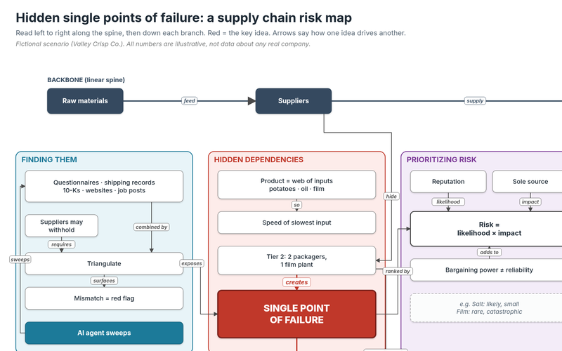

Case study
Two Suppliers, One Factory
A snack company thinks it has two packaging suppliers. Both rely on the same film plant one tier down, so it really has one. The study shows how to find that kind of hidden dependency, rank it, and set controls that buy time.
Fictional company; all numbers are illustrative.